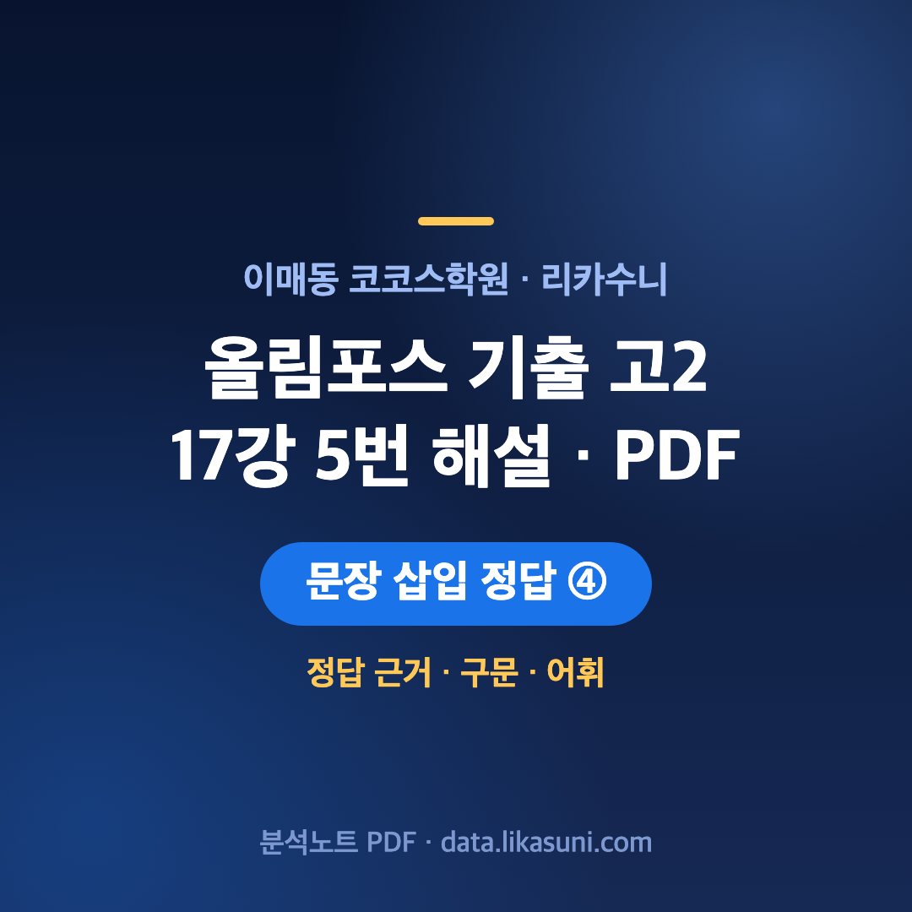
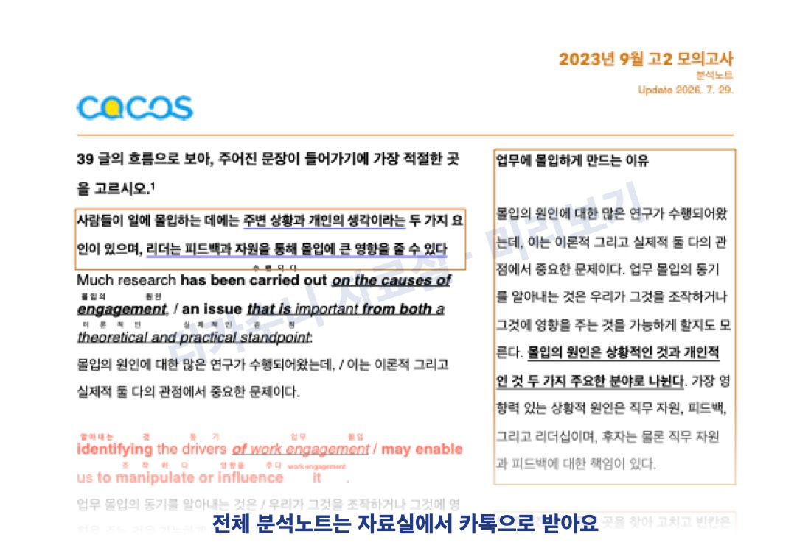

리카수니 분석노트 해설 · 이매동 코코스학원
올림포스 전국연합학력평가 기출문제집 고2 17강 5번 문장 삽입 해설·분석이에요. (2023년 9월 고2 전국연합학력평가 영어 39번 · 주어진 문장 넣기 · 정답 ④)
정답 근거, 오답 거르는 법, 구문(to the point that · 분사구문 being · the latter · enable + 목적어 + to부정사), 어휘를 정리했고 분석노트 pdf 받는 곳은 글 아래에 있어요.
안녕하세요, 이매동 코코스학원 리카수니 원장입니다.
학생 요청으로 만든 분석노트를 바탕으로 정리했어요. 지문은 교재에 있으니 교재를 펴 놓고 함께 보세요.
| 한눈에 보는 정답 · 교재: 올림포스 전국연합학력평가 기출문제집 고2 (EBS) · 위치: 17강 5번 (글의 흐름으로 보아 주어진 문장이 들어가기에 가장 적절한 곳) · 원래 시험: 2023년 9월 고2 전국연합학력평가 영어 39번 · 정답: ④ |
사람들이 일에 몰입하는 데에는 주변 상황과 개인적인 요인이라는 두 가지 원인이 있고, 리더는 피드백과 자원으로 몰입에 큰 영향을 준다는 글이에요.
흐름은 몰입의 원인 연구 → 상황적·개인적 두 갈래 → 상황적 원인 = 직무 자원·피드백·리더십 → 리더의 역할 → 몰입이 성과를 낳고, 성과도 몰입을 낳는다 → 가치와 맞는 일에서 특히 그렇다예요.
| · 근거 1: ③ 뒤 문장까지는 리더가 피드백과 자원을 주어 '몰입 → 직무 수행'에 영향을 준다는 한 방향 이야기예요. · 근거 2: 주어진 문장은 however 로 방향을 틀어 '몰입이 성과를 이끌지만, 성과도 몰입을 이끈다'는 반대 방향을 덧붙여요. · 근거 3: ④ 뒤 문장은 In other words 로 시작해, 일을 잘 해내면 더 몰입하고 성과를 자랑스러워한다고 '성과 → 몰입'을 풀어 설명해요. → In other words 가 받을 내용(성과도 몰입을 이끈다)이 ④ 앞에 없으니, 주어진 문장은 ④에 들어가요. |
| · ①·② 자리는 몰입의 원인을 두 갈래로 나누고 상황적 원인을 소개하는 흐름이라 끊기지 않아요. · ③ 자리 뒤 Indeed 문장은 바로 앞의 '리더십' 이야기를 이어 받아서 자연스러워요. · ⑤ 자리 앞뒤는 '일을 잘하면 더 몰입한다 → 가치와 맞는 일일 때 특히 그렇다'로 이미 이어져 있어요. 문장 삽입 문제는 In other words·This·the latter 처럼 '앞 내용을 받는 말'이 가리킬 대상이 앞에 있는지부터 확인하세요. |

▲ 올림포스 기출문제집 고2 17강 5번 문장 삽입 해설·분석 pdf 분석노트 미리보기
| 1) to the point that ~ (~할 정도로) / match or exceed 병렬 → when employees are able to do their jobs well — to the point that they match or exceed their own expectations and ambitions (2023년 9월 고2 39번) 2) 동명사 주어 identifying ~ + may enable + 목적어 + to부정사 3) the latter (후자 = leadership) + 분사구문 being responsible for ~ 4) 수단 by -ing 병렬 (by giving ~, and by providing ~) / 주격 관계대명사 that enable them to perform 5) It is noteworthy that ~ (가주어 It) / although 양보절 6) 병렬 동사 engage / be proud of / find + 목적어 + 형용사 (meaningful, meaningfully 아님) |
| 영어 | 뜻 |
|---|---|
| carry out | 수행하다 |
| engagement | 몰입 / engage 몰입하다 |
| theoretical | 이론적인 / practical 실제적인 |
| standpoint | 관점 |
| identify | 알아내다 |
| driver | 동기, 원동력 / drive 이끌다 |
| manipulate | 조작하다 |
| fall into | ~로 나뉘다 |
| camp | 그룹, 입장 |
| situational | 상황적인 / personal 개인적인 |
| influential | 영향력 있는 |
| the latter | 후자 |
| constructive | 건설적인 |
| noteworthy | 주목할 만한 |
| exceed | 능가하다 |
| ambition | 야망 |
| evident | 분명한 |
| align with | ~와 일치하다 (= match) |
| 서술형 대비 분석노트에 문장마다 쉬운 영어로 바꾼 문장(= Understanding the factors that contribute to work engagement could potentially allow us to manage or shape it.)과, 틀린 곳 고치기·빈칸 채우기 문제(정답 포함)를 넣어 두었어요. latter/later, being, meaningful/meaningfully 처럼 어법에 잘 나오는 자리도 표시해 두었어요. |
| 📂 올림포스 기출문제집 고2 17강 5번 분석노트 pdf 받는 법 끊어 읽기·해석·구문·서술형 문제가 정리된 PDF 는 리카수니 자료실에서 카카오 로그인 후 카톡으로 받을 수 있어요. 올림포스 기출문제집 다른 강·번호도 같은 페이지에서 요청할 수 있어요. 2023년 9월 고2 모의고사 문제지·정답 pdf 는 자료실 위쪽 '모의고사' 메뉴에서 찾을 수 있어요. ▶ 분석노트 요청하기 (리카수니 자료실) https://data.likasuni.com/notes/#note-req ※ 출처: 한국교육방송공사(EBS) 올림포스 전국연합학력평가 기출문제집 고2 (2023년 9월 고2 전국연합학력평가 영어 39번). 지문 원문과 주어진 문장, 전체 해석은 싣지 않았어요. |
Q. 올림포스 기출문제집 고2 17강 5번 문장 삽입 해설·분석 정답은?
A. ④
Q. 분석노트 pdf 는 어디서 받나요?
A. 리카수니 자료실(data.likasuni.com)에서 카카오 로그인 후 카톡으로 받을 수 있어요. 위 안내의 링크로 이동하세요.
이상 올림포스 기출문제집 고2 17강 5번 문장 삽입 해설·분석 pdf 정리였어요. 궁금한 점은 댓글로 남겨 주세요.
| 🏫 이매동 코코스학원 안내 분당 이매동 코코스학원은 초등·중등·고등 영어와 수학을 가르쳐요. 모의고사·수능특강·내신 대비가 궁금하시면 편하게 문의해 주세요. · 홈페이지: https://www.cocosedu.co.kr/ · 주소: 경기 성남시 분당구 판교로 476 2층 |
#올림포스기출문제집고2 #올림포스기출문제집 #올림포스전국연합학력평가기출문제집 #올림포스기출17강 #올림포스기출고217강5번 #2023고29월모의고사 #고29모영어 #고29모영어39번 #문장삽입 #tothepointthat #EBS영어 #영어분석노트 #이매동영어학원 #코코스학원 #리카수니